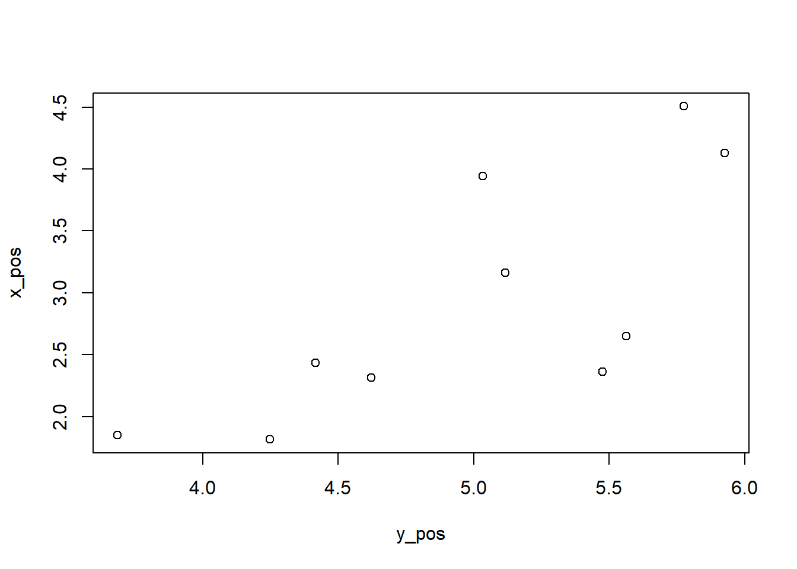
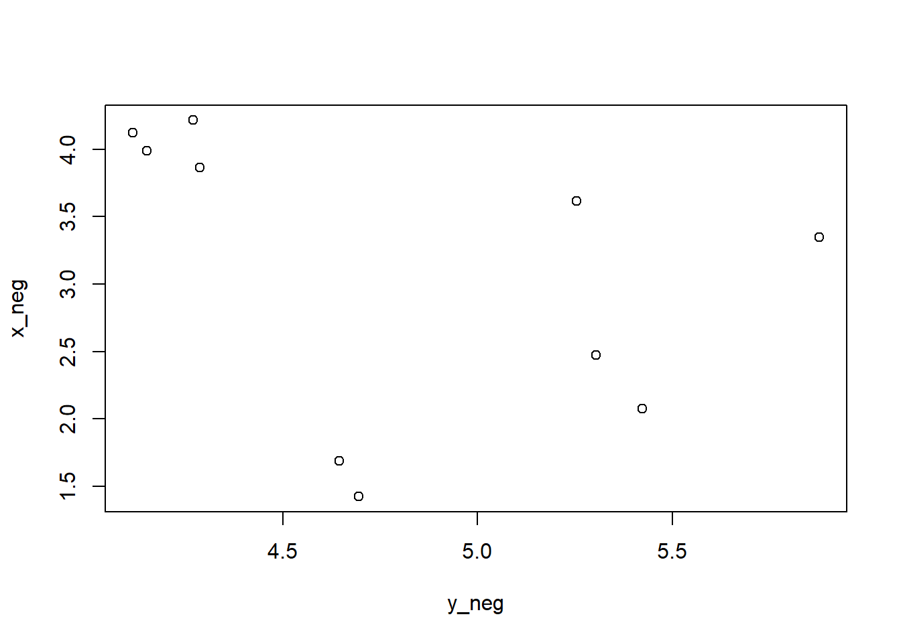
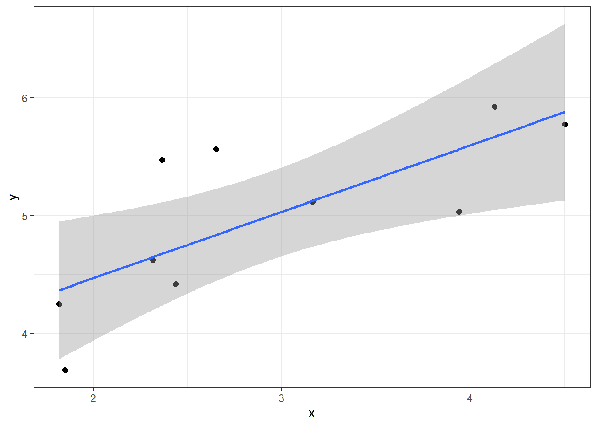

Chapter 4 Pertemuan 3: Eksplorasi Data
Dalam pertemua ini kita akan menggunakan 2 paket yaitu tidyverse untuk menampilkan hasil deskriptif data dan ggplot2 untuk visualisasi data.
Pada paket tidyverse kita akan menggunakan beberapa fungsi berikut:
%>%(fungsi pipe)summarise()untuk statistik deskriptif (untuk statistik deskriptif yang diperlukan dapat disesuaikan dengan fungsi-fungsi statistik deskriptif dasar yang telah tersedia diRsepertimean(),sd(),min(), dsb.)group_by()yang digunakan apabila ingin memunculkan hasil deskriptif berdasarkan kelompok-kelompok tertentu (seperti pendidikan, wilayah, dsb.)
Pertama-tama siapkan data yang akan digunakan.
rawdata <- read.csv("G:/Mandat/data_latihan.csv", sep=";")
mydata <- rawdata %>% na.omit()
head(mydata)## tinggi berat jk
## 1 172 77 male
## 2 167 75 none
## 3 96 32 none
## 4 202 136 male
## 5 150 49 female
## 6 178 120 male4.1 Statistik Deskriptif
Dalam R kita dapat menggunakan fungsi summary() untuk memberikan hasil deskriptif yang sederhana. Seperti pada contoh berikut:
summary(mydata)## tinggi berat jk
## Min. : 66.0 Min. : 15.00 Length:58
## 1st Qu.:168.5 1st Qu.: 56.40 Class :character
## Median :180.0 Median : 79.00 Mode :character
## Mean :173.9 Mean : 98.16
## 3rd Qu.:192.5 3rd Qu.: 84.75
## Max. :234.0 Max. :1358.00Seperti yang terlihat bahwa untuk data-data numeric akan menghasilkan nilai minimum, kuartil (1, 2 dan 3), rataan, maksimum dan jumlah missing value (NA). Sedangkan pada data character hanya memunculkan jumlah datanya saja. Bagaimana dengan hasil pada data factor?
4.1.1 Deskriptif dengan dplyr
Pada fungsi summarise() statistik deskriptif sebaiknya dilakukan pada masing-masing variabel. Hal ini dilakukan agar hasil tidak terlalu banyak yang justru akan mengganggu dalam memahami deskriptif data. Semimal pada contoh berikut akan menghitung rataan pada variabel tinggi badan (tinggi).
mydata %>% summarise(
rataan = mean(tinggi)
)## rataan
## 1 173.9483Perhatikan bahwa hasil dari fungsi summarise() disajikan dalam bentuk data.frame. Penamaan rataan hanya untuk menamakan hasil dari fungsi yang digunakan (dalam hal ini mean()). Penamaan tersebut sesuai dengan kebutuhan dari pengguna (namun nama tersebut harus seuai dengan format penamaan sebuah objek dalam R).
Selanjutnya akan ditambahkan dengan fungsi-fungsi lain
mydata %>% summarise(
rataan = mean(tinggi), # rataan
median = median(tinggi), # nilai tengah
std.dev = sd(tinggi), # standar deviasi
minimum = min(tinggi), # nilai minimum
maksimum = max(tinggi), # nilai maksimum
jarak = range(tinggi), # range
n_data = n() # jumlah data
)## rataan median std.dev minimum maksimum jarak n_data
## 1 173.9483 180 35.83511 66 234 66 58
## 2 173.9483 180 35.83511 66 234 234 58Selanjutnya untuk variabel lain dapat dibuat dengan cara yang sama lalu mengganti nama variabelnya saja.
mydata %>% summarise(
rata_rata = mean(berat),
median = median(berat),
std.dev = sd(berat),
minimum = min(berat),
maksimum = max(berat),
jarak = range(berat),
n = n()
)## rata_rata median std.dev minimum maksimum jarak n
## 1 98.16207 79 170.8102 15 1358 15 58
## 2 98.16207 79 170.8102 15 1358 1358 584.1.2 Deskriptif Statistik Berdasarkan Kelompok
Untuk mendapatkan deskriptif sesuai dengan kelompok tertentu, maka perlu menambahkan fungsi group_by(nama_variabel_kelompok) sebelum fungsi summarise(). Semisal pada contoh berikut akan mengelompokkan deskriptif berdasarkan variabel jenis kelamin (jk)
mydata %>% group_by(jk) %>% summarise(
rata_rata = mean(tinggi),
median = median(tinggi),
std.dev = sd(tinggi),
minimum = min(tinggi),
maksimum = max(tinggi),
jarak = max(tinggi) - min(tinggi),
n = n()
)## # A tibble: 4 × 8
## jk rata_rata median std.dev minimum maksimum jarak n
## <chr> <dbl> <dbl> <dbl> <int> <int> <int> <int>
## 1 female 169. 168 9.94 150 184 34 9
## 2 hermaphroditic 175 175 NA 175 175 0 1
## 3 male 178. 183 37.0 66 234 168 44
## 4 none 140 132 52.0 96 200 104 44.2 Visualisasi Data dengan ggplot2
Visualisasi Data adalah salah satu hal yang dapat digunakan untuk menyajikan data dalam bentuk grafik. Grafik ini dapat digunakan untuk melihat distribusi data hingga hubungan antar variabel. Program R pun memiliki fungsi-fungsi yang dapat digunakan untuk membuat sebuah grafik (plot()). Namun fungsi plot() ini masih merupakan fungsi yang sederhana. Hasilnya, grafik kurang menarik untuk disajikan pada khalayak umum.
Seperti sebelumnya yang menggunakan paket tidyverse untuk meringkas data, dalam membuat grafik kali ini juga akan menggunakan paket yaitu ggplot2. Paket ggplot2 ini memberikan fasilitas bagi penggunanya dalam membuat sebuah grafik yang jauh lebih menarik dibandingkan dengan fungsi plot(). Setelah anda memahami jenis-jenis grafik beserta cara penggunaannya, kita dapat menggunakan paket ggpubr yang telah disusun khusus untuk kebutuhan publikasi/penerbitan (penggunaan paket ini tidak akan dibahas dalam pertemuan ini).
Setelah instalasi paket ggplot2 selesai, selanjutnya kita dapat mengaktifkan paket tersebut dengan perintah
library(ggplot2)Perhatikan bahwa dalam membuat grafik (khususnya saat menggunakan paket ggplot2) sangat perlu menentukan terlebih dahulu hal-hal berikut:
- Data yang akan digunakan.
- Variabel mana yang akan menjadi Variabel pada Axis X dan Variabel pada Axis Y. Biasanya Axis X untuk variabel bebas dan Axis Y untuk variabel terikat. Namun dalam praktiknya tidak harus sesuai dengan kebiasaan tersebut.
- Jenis grafik yang akan digunakan. Mengetahui grafik yang akan digunakan akan membatu kita dalam menentukan variabel mana saja yang dapat digunakan untuk grafik tersebut.
- Label-label seperti label untuk judul, subjudul, axis x, axis y, dll.
- Tema Grafik untuk paket
ggplot2
Poin 1 hingga 3 adalah yang wajib tersiapkan. Sedangkan poin 4 dan 5 adalah untuk keperluan estetik dalam pembuatan grafik yang bertujuan agar grafik menjadi lebih menarik dan mudah dipahami.
4.2.1 Grafik Batang
Grafik batang merupakan grafik yang digunakan untuk menunjukkan distribusi frekuensi dari data. Grafik batang lebih sering digunakan untuk menunjukkan perbedaan jumlah dari data yang bertipe kategorik seperti jenis kelamin, asal daerah, status pernikahan, jumlah penjualan dalam kurun waktu tertentu, dsb. Sebelum kita akan membuat sebuah grafik batang, kita persiapkan datanya terlebih dahulu dengan menggunakan kode-kode berikut:
jph <- c(34, 25, 69, 40, 30, 32, 45)
hr <- c("Sen", "Sel", "Rab", "Kam", "Jum", "Sab", "Min")
x <- data.frame(Hari = hr, Pasien = jph)
x## Hari Pasien
## 1 Sen 34
## 2 Sel 25
## 3 Rab 69
## 4 Kam 40
## 5 Jum 30
## 6 Sab 32
## 7 Min 45Keterangan:
- objek
jphadalah objek yang menyimpan jumlah kunjungan pasien harian dalam 1 minggu. - objek
hradalah nama-nama hari dari Hari Senin hingga Minggu. - objek
xadalah kerangka data (data.frame) yang memuat variabel Hari dengan isian objekhrdan variabel Pasien dengan isian objekjph.
Fungsi yang sudah ada untuk membuat grafik batang adalah barplot(). Fungsi ini memberikan hasil yang sangat sederhana dan lebih cocok digunakan untuk sebuah laporan. Pertama-tama kita tentukan terlebih dahulu data, variabel x dan y, dan jenis grafik yang sudah tentu menggunakan grafik batang:
- data ->
x - variabel x ->
x$Hari; variabel y ->x$Pasien(PasiendanHariada didalam objekx) - jenis grafik -> grafik batang (
barplot())
Berikut adalah cara membuat grafik batang dengan menggunakan perintah barplot():
barplot(x$Pasien, names.arg = x$Hari,
main = "Grafik Batang dengan Fungsi barplot()",
xlab = "Hari",
ylab = "Jumlah Kunjungan Pasien Harian",
ylim = c(0, 80))
Penjelasan:
x$Pasien, setelah adalah data pasien harian yang akan menentukan tinggi batang dari grafik.names.arg = x$Hariadalah penentuan label dari masing-masing batang. Dalam kasus ini label pada masing-masing batang sesuai dengan data harix$Hari.main = ""digunakan untuk menentukan judul dari grafik batang.xlab = ""digunakan untuk menentukan judul dari Axis X.ylab = ""digunakan untuk menentukan judul dari Axis Y.ylim = c(min, max)digunakan untuk menentukan batas bawah (min) dan batas atas (max) dari Axis Y. Tambahan ini biasanya diperlukan jika grafik yang muncul memiliki batas atas dan bawah Axis Y kurang sesuai.
Selanjutnya kita akan menggunakan paket ggplot2 untuk menyajikan grafik batang yang lebih menarik. Berikut adalah fungsi untuk membuat grafik batang dengan menggunakan paket ggplot2:
ggplot(x, aes(y=Pasien, x=Hari, fill=Hari, colour=Hari)) +
geom_col() +
labs(title = "Jumlah Laki-laki dan Perempuan",
subtitle = "Latihan Membuat Grafik dengan R") +
xlab("Hari") +
ylab("Jumlah Kunjungan Pasien Harian") +
theme_bw() +
theme(legend.position = "none")
Penjelasan:
ggplot(x, aes())adalah fungsi untuk membuat sebuah objekggplotdenganxadalah datanya danaes()untuk mengisikan variabel x (datax$Hari) dan variabel y (datax$Pasien).fillbertujuan untuk memberi warna batang (harus sama denganxpadaaes()agar setiap batang memiliki warna yang berbeda). Hal ini dikarenakan setiap batang merepresentasikan hari (variabelx). Bagian ini dapat dihilangkan apabila tidak diperlukan.coloursama sepertifillnamun untuk warna garis.geom_col()adalah perintah untuk membuat grafik batang untukggplot.labs()digunakan untuk menambahkan judul dan subjudul.xlab()digunakan untuk memberikan label axis x.ylab()digunakan untuk memberikan label axis y.theme_bw()bertujuan untuk menentukan temablack and whitepada grafik.theme(legend.position = "none")digunakan untuk menghilangkan legenda pada grafik. Bagian ini dapat dihilangkan apabila tidak diperlukan.+ini bertujuan menambahkan fungsi untukggplot()diawal baris. Berbeda dengan fungsibarplot()yang hanya memerlukan fungsi tersebut untuk membuat grafik, dalamggplot2diperlukan beberapa fungsi yang dihubungkan dengan operator+.
4.2.2 Histogram
Histogram merupakan grafik batang yang dapat menunjukkan seberapa sering suatu nilai yang berbeda terjadi. Histogram lebih sering digunakan untuk melihat distribusi dari suatu data. Berbeda dengan grafik batang, kita perlu menggunakan data numerik dalam membuat sebuah histogram. Perbedaan utama dari histogram dan grafik batang adalah tidak adanya jarak antar batang pada histogram sedangkan pada grafik batang memiliki jarak antar masing-masing batangnya.
Data yang akan digunakan yntuk membuat grafik batang adalah data yang disimulasikan berdistribusi normal dengan menggunakan fungsi rnorm(). Berikut adalah kode untuk membuat simulasi data yang berdistribusi normal:
set.seed(152)
mydata <- data.frame(x = rnorm(100,5,2))Selanjutnya kita membuat histogram dengan menggunakan fungsi hist() yang telah tersedia pada program R saat melakukan instalasi program R:
hist(mydata$x)Selanjutnya kita akan menggunakan perintah yang tersedia pada paket ggplot2:
ggplot(mydata, aes(x)) +
geom_histogram(binwidth = 1.3) +
theme_bw()
Penjelasan:
ggplot(data, aes(x))adalah fungsi untuk membuat sebuah objekggplotdari datamydatadengan variabel x nya adalahxgeom_histogram(binwidth = 1)geom_histogram()adalah fungsi untuk membuat histogram menggunakanggplotbinwidthadalah lebar dari masing-masing batang. Biasanya ditentukan apabila kita ingin mengetahui perbedaan hasil pada lebar batang yang kecil dengan yang besar.
theme_bw()bertujuan untuk menentukan temablack and whitepada plot
Selanjutnya bandingkan dengan histogram yang memiliki binwidth yang lebih besar:
ggplot(mydata, aes(x)) +
geom_histogram(binwidth = 3) +
theme_bw()
Dalam membuat histogram hanya memerlukan 1 variabel yaitu variabel x saja. Namun ini tak berarti bahwa histogram hanya digunakan untuk melihat distribusi variabel bebas saja.
Agar batang-batang terlihat seolah-olah dipisahkan, kita dapat menambahkan colour pada fungsi geom_histogram() seperti pada contoh berikut:
ggplot(mydata, aes(x)) +
geom_histogram(binwidth = 1.3, colour = "white") +
theme_bw()4.2.3 Diagram Lingkaran
Diagram lingkaran lebih sering digunaan untuk menunjukkan perbandingan antar kategori pada sebuah variabel. Berikut ini adalah data yang akan kita gunakan untuk membuat diagram lingkaran:
jumlah <- c(23, 57, 20)
label <- c("Setuju", "Tidak setuju", "Tidak tahu")
x <- data.frame(label, jumlah)Menggunakan perintah pie
pie(x$jumlah, labels = x$label)
Selanjutnya berikut ini adalah perintah untuk membuat diagram lingkaran dengan menggunakan paket ggplot2
p <- ggplot(x, aes(x="", y=jumlah, fill=label)) +
geom_bar(stat = "identity")
p + coord_polar("y", start = 0)penjelasan:
ggplot(x, aes(x="", y=jumlah, fill=label))adalah perintah untuk membuat sebuah objek ggplot dengan dataxdengan nilaiyadalah jumlah danlabelmenjadi warna pembeda di setiap nilai padaygeom_bar(stat = "identity")geom_bar()adalah perintah untuk membuat grafik batang menggunakanggplotstat = "identity"bertujuan untuk membuat grafik batang dalam bentuk stacked bar chart
coord_polar("y", start = 0)bertujuan untuk membentuk stacked pada koordinat polar mengikutiangle = ydan dimulai dari titik nolstart = 0
4.2.4 Box Plot
Box Plot dapat menggambarkan sebaran data yang bersifat numerik. Box plot dibuat dengan menggunakan nilai-nilai pada ukuran pemusatan data. Nilai-nilai tersebut ialah 1st quartile, median, 3rd quartile, dan interquartile range. Selanjutnya kita akan menggunakan 3 data berbeda yang bersebar normal untuk menunjukkan keunggulan dalam menggunakan box plot.
x <- rnorm(250, 9, 3)
y <- rnorm(250, 4, 1)
z <- rnorm(250, 11, 6)Menggunakan perintah boxplot
boxplot(x, y, z,
names = c("x", "y", "z"))
data <- data.frame(label = c(rep(c("x","y","z"),
each=250)),
value = c(x, y, z))
head(data)## label value
## 1 x 13.020138
## 2 x 6.233237
## 3 x 12.883819
## 4 x 9.331198
## 5 x 3.651552
## 6 x 11.017891
Menggunakan paket ggplot2
p <- ggplot(data, aes(x=label, y=value)) +
geom_boxplot(outlier.colour = "red") +
theme_bw()
ppenjelasan:
ggplot(data, aes(x=label, y=value))adalah perintah untuk membuat sebuah objek ggplot dengan nilaivaluesebagaiydanlabelmenjadi warna pembeda di setiap nilaiymenggunaan datadatageom_boxplot(outlier.colour = "red")geom_boxplot()adalah perintah untuk membuat box plot menggunakanggplotoutlier.colour = "red"memberikan warna merah pada garis box plot (optional)
Menggunakan paket ggplot2
4.2.5 Scatter Plot
Scatter Plot (diagram pencar) merupakan grafik yang dibuat dengan tujuan untuk memasangkan 2 nilai/variabel. Diagram pencar dapat menggambarkan hubungan dari 2 nilai/variabel tersebut. Apabila titik-titik dalam diagram pencar menuju kearah kanan atas dari kiri bawah, maka terdapat hubungan yang positif dari kedua nilai/variabel begitu pula sebaliknya. Kita akan menggunakan data berikut untuk menunjukkan hubungan yang positi dan negatif dari 2 variabel.
n <- 10
r <- 0.75
library(MASS)##
## Attaching package: 'MASS'## The following object is masked from 'package:dplyr':
##
## selectdata_pos <- mvrnorm(n, mu=c(3, 5), Sigma=matrix(c(1, r, r, 1), nrow=2))
x_pos <- data_pos[, 1]
y_pos <- data_pos[, 2]
data_neg <- mvrnorm(n, mu=c(3, 5), Sigma=matrix(c(1, -r, -r, 1), nrow=2))
x_neg <- data_neg[, 1]
y_neg <- data_neg[, 2]Menggunakan perintah plot pada program R:
plot(y_pos, x_pos)
plot(y_neg, x_neg)
Gambar pertama menunjukkan adanya hubungan yang positif pada pariabel y_pos dan x_pos. Sedangkan pada gambar kedua adalah sebaliknya, yaitu hubungan yang negatif. selanjutnya kita akan membangun diagram pencar menggunakan paket ggplot2.
data_pos <- data.frame(data_pos)
colnames(data_pos) = c("x","y")
p <- ggplot(data_pos, aes(x,y))
p + geom_point(size=2) +
geom_smooth(method=lm) +
theme_bw()## `geom_smooth()` using formula 'y ~ x'
penjelasan:
data_posadalah objek yang memuatdata_posbaru setelah diubah kedalam bentukdata framecolnames()adalah perintah untuk memberikan nama kolom/variabel padadata frameggplot(data_pos, aes(x,y))adalah perintah untuk membuat sebuah objek ggplot dengan nilaivaluesebagaiydanlabelmenjadi warna pembeda di setiap nilaiymenggunaan datadatageom_point()adalah perintah untuk membuat diagram pencarsize=2adalah perintah untuk mengubah ukuran titik diagram pencar menjadi sebesar 2 poin
geom_smooth(method=lm)adalah perintah untuk membuat garis regresi linier sebagai penegas hubungan antara 2 variabel (optional)
4.2.6 Line Plot
x <- c(23, 57, 20)
names(x) <- c("Setuju", "Tidak setuju", "Tidak tahu")Menggunakan perintah pie
plot(x, type = "o")
4.2.7 Area Plot
data("diamonds")
head(diamonds)## # A tibble: 6 × 10
## carat cut color clarity depth table price x y z
## <dbl> <ord> <ord> <ord> <dbl> <dbl> <int> <dbl> <dbl> <dbl>
## 1 0.23 Ideal E SI2 61.5 55 326 3.95 3.98 2.43
## 2 0.21 Premium E SI1 59.8 61 326 3.89 3.84 2.31
## 3 0.23 Good E VS1 56.9 65 327 4.05 4.07 2.31
## 4 0.29 Premium I VS2 62.4 58 334 4.2 4.23 2.63
## 5 0.31 Good J SI2 63.3 58 335 4.34 4.35 2.75
## 6 0.24 Very Good J VVS2 62.8 57 336 3.94 3.96 2.48Note: data diamonds adalah data yang sudah tersedia dalam program R
Menggunakan paket ggplot2
p <- ggplot(diamonds, aes(x = price, fill = cut))
p + geom_area(stat = "bin")## `stat_bin()` using `bins = 30`. Pick better value with `binwidth`.